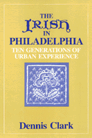

|  |
The Irish in PhiladelphiaTen Generations of Urban ExperienceDennis Clarkpaper EAN: 978-0-87722-227-9 (ISBN: 0-87722-227-4) |
"...a serious, solid, widely and deeply researched study that reveals a number of significant and interesting insights into Irish immigrant history in America."
—Commonwealth
Excerpt available at www.temple.edu/tempress
"A fine book about the Irish in Philadelphia that is a combination of social history and a study of ten generations of a transplanted minority struggling initially for survival, then for advancement, affluence, recognition and identity against formidable odds."
—Pennsylvania Magazine of History and Biography
"A fund of good stories and some interesting conclusions on the extraordinarily adept transition managed by an essentially rural people into a rough and bustling urban environment in the mid-nineteenth century."
—Philadelphia Inquirer
"A valuable contribution that will prove interesting not only to historians but also to sociologists and students of urban problems."
—Oscar Handlin
Foreword
Preface
1. A Tradition Grows
2. The Famine Generation
3. City Shelter
4. Working to Live
5. Church and School
6. Clans and Causes
7. Hibernia Philadelphia
8. The Tradition Persists
9. The Urban Irishman
Notes
Note on Sources
Index
Dennis Clark is a Philadelphian who has written a number of books on urban problems, race relations, and immigrant history. The Irish of Philadelphia is the first of several volumes produced by the author tracing the history of Philadelphia's 200-year-old Irish community.
Philadelphia Region
Race and Ethnicity
© 2015 Temple University. All Rights Reserved. This page: http://www.temple.edu/tempress/titles/62_reg.html.